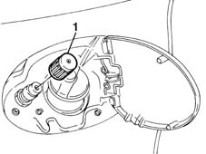
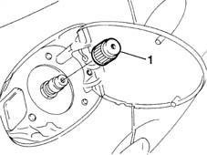

1042A30 cng cylinder recharge valve cock - r r
- Path
- Procedures > 10 ENGINE UNIT > 1042 METHANE GAS CANNISTER AND TUBES > 1042A METHANE GAS CANNISTER AND TUBES FOR RE-CHARGING > 1042A30 cng cylinder recharge valve cock - r r
- Kind
- repair procedure (removal / refitting; the operation number is the code)
- Applies to
- engines: 1.6 16v; all production periods; only with equipment: BIPOWER and BLUPOWER
- Interactive page
- https://sloeber94.github.io/elrnDB-fMltpl/en/#/2891464
Applies to: engines: 1.6 16v; all production periods; only with equipment: BIPOWER
 Removing
Removing
 Refitting
RefittingOpen the access flap.
1. Undo the cap in an anti-clockwise direction and remove it.

Applies to: engines: 1.6 16v; all production periods; only with equipment: BIPOWER
Refitting
RemovingTighten the cap in a clockwise direction.
Close the access flap.
Applies to: engines: 1.6 16v; all production periods; only with equipment: BLUPOWER
Removing
RefittingOpen the access flap.
1. Undo the cap in an anti-clockwise direction and remove it.

Applies to: engines: 1.6 16v; all production periods; only with equipment: BLUPOWER
Refitting
RemovingTighten the cap in a clockwise direction.
Close the access flap.